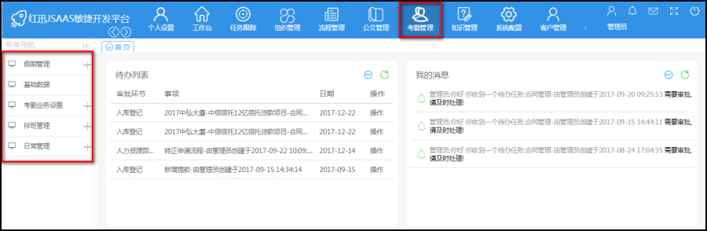
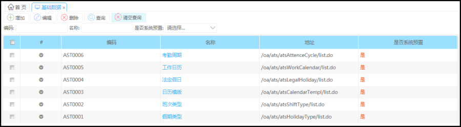
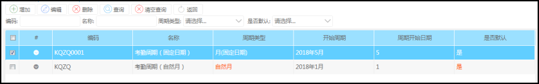
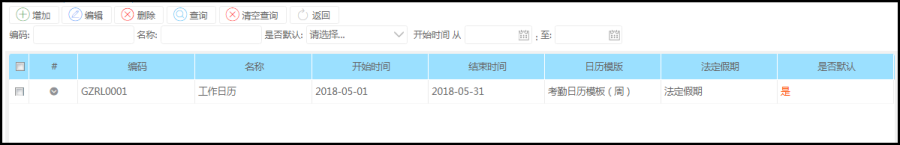
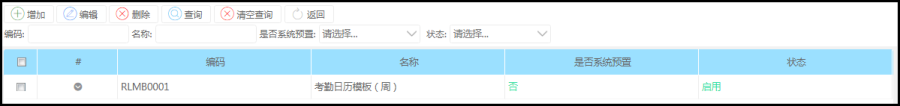
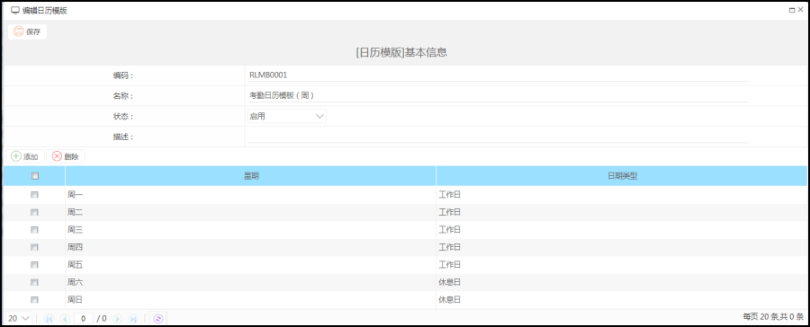
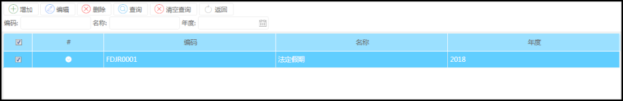
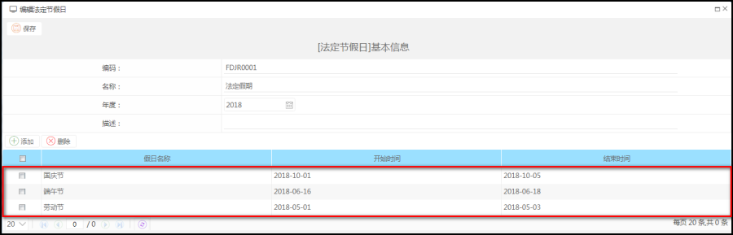
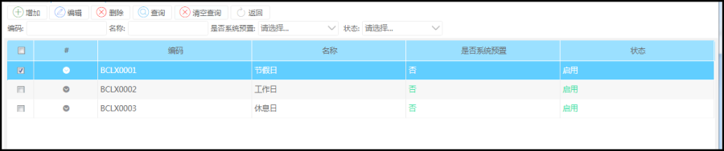
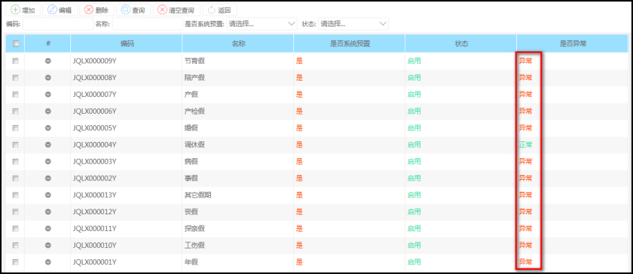

功能描述
基础数据是对考勤周期，工作日历，法定假期，日历模板，班次类型，假期类型等一些数据维护。
1>考勤周期是指对员工的考勤安排，方便员工的考勤计算和工资计算，其中它有两个字段（自然月是指一号到28号是一个自然月，这个月任何一天考勤都可以，固定月是指管理员设置考勤时间，例如安排时间是5.1——5.5，那么员工只能在这个时间范围考勤）每年需设置相应的考勤年份，月份
2>工作日历是以日历模板，法定假日为基础的，需要先设置好前两项
3>法定假日是指国家法定的假期，在排班向导中为员工排班中使用到
4>日历模板是定义一个模板，方便员工在排班向导中选择日历模板排班
5>班次类型也是为员工排班做为基础，根据需求设置，例如（休息日，工作日，法定假日等等）
6>假期类型是指按公司规定设置相应假期类型，在考勤计算是否显示异常，以方便人事查询，核算工资
操作步骤
点击‘考勤管理’菜单，展示相应的考勤模块

基础数据
点击考勤模块中的基础数据，如新功能上线可点击‘增加’相应的数据，如基础数据有更新则点击‘编辑’

考勤周期
可添加，编辑考勤周期信息

工作日历
可添加，编辑工作日历信息

日历模板
可添加，编辑

具体信息
可设置每周的循环天数

法定假日
根据国家和公司的实际需求可添加，编辑法定假日信息，需要每年进行设置

具体信息，设置假期的时间

班次类型
可添加，编辑

假期类型
可添加，编辑
